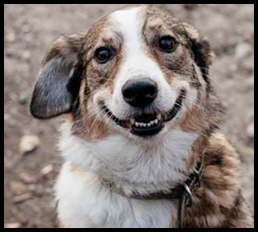

Cada adoção é uma história de amor e recomeço. Conheça os relatos emocionantes de tutores que abriram seus corações e lares para animais resgatados pela ACAPRA.
Bob foi encontrado em situação crítica após ser atropelado. Graças à solidariedade de nossos apoiadores, recebeu tratamento e um novo lar com a Ana e o Marcos. Hoje, Bob é um cachorro alegre e cheio de energia, trazendo felicidade para sua nova família. "Não imaginamos nossa vida sem ele", diz Ana.
Mel foi resgatada ainda filhote, frágil e assustada. Seu destino mudou quando a Carolina decidiu adotá-la. Carolina sempre teve o sonho de ter um animal de estimação, mas queria ter certeza de que poderia oferecer um lar seguro e amoroso. Quando conheceu Mel, uma pequena cadelinha de olhos brilhantes e olhar doce, sentiu uma conexão imediata. "Ela estava muito assustada, mas quando a peguei no colo, ela se aninhou e soube que precisava levá-la para casa", conta Carolina. Nos primeiros dias, Mel demonstrou um pouco de medo, mas com paciência e carinho, foi ganhando confiança. Hoje, é uma cadela cheia de energia, que adora brincar no quintal e acompanhar Carolina em todas as atividades. "Ela preencheu nosso lar de amor e alegria. Mal consigo me lembrar de como era minha vida antes dela", finaliza.
Quer transformar a vida de um animal? O processo é simples: